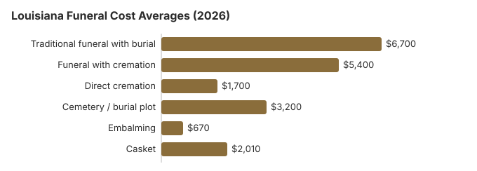

Funeral Costs in Louisiana: What Families Pay in 2026
Louisiana is one of the cheaper states for a funeral, at about $6,700 for a traditional service on our estimate, 19% under the national median. Burial is still the norm: only 35% of Louisiana deaths end in cremation. Below are the prices, the state's rules and the ways to spend less.
Louisiana Funeral Charges, Item by Item
The state board licenses funeral homes but leaves prices to them, so a New Orleans quote can differ a good deal from one in Monroe.
| Service | Average Cost | Range |
|---|---|---|
| Traditional funeral with burial | $6,700 | $5,025 – $8,710 |
| Funeral with cremation | $5,400 | $4,320 – $7,020 |
| Direct cremation | $1,700 | $1,190 – $2,380 |
| Cemetery / burial plot | $3,200 | $1,600 – $6,400 |
| Embalming | $670 | $500 – $1,500 |
| Casket | $2,010 | $670 – $5,360 |
How we got these prices: they are modelled for Louisiana from national and regional data rather than gathered from local funeral homes, so treat them as a starting budget, not a quote or advice. Read the method and our disclaimer.
State sources: La. R.S. 13:5715(A)(2).

Louisiana: Cremation or a Burial
Cremation
- Direct cremation near $1,700
- Near $5,400 including a service
- No cemetery purchase
- Memorial whenever suits the family
- 35% of Louisiana families choose it
Traditional Burial
- Service near $6,700
- A plot or tomb space near $3,200 extra
- Vault or liner expected by most cemeteries
- A permanent resting place
- Steel or other metal casket, about $2,500 at the US median (NFDA 2023 General Price List Study); Louisiana sellers vary
Louisiana's Funeral Homes
Some Louisiana towns are served mainly by chain-owned homes, which tend to charge more, while in others family firms still handle most funerals.
Louisiana Families and the FTC Rule
A Louisiana home that breaks these rules can be reported to the FTC at ftc.gov, and the Funeral Consumers Alliance gives free advice.
Paying for a Funeral in Louisiana
- When a parish pays for a pauper disposition, it pays the actual cost, and the coroner can set a lower limit for the funeral home (La. R.S. 13:5715).
- Louisiana survivors claim the one-time $255 from Social Security by phone (1-800-772-1213); only a widow, widower or eligible child qualifies, and the deadline is two years. Who signs the funeral contract is set by La. R.S. 8:655: a person the decedent named in a notarial testament or notarized declaration comes first, then the spouse, then a majority of adult children, grandchildren, parents and siblings in turn. When none of them can give authorization, a district court judgment is required, which adds delay and legal cost.
- The VA burial allowance for a Louisiana veteran is claimed on Form 21P-530EZ by whoever paid; a non-service-connected death from October 1, 2026 onward qualifies for up to $1,032 toward burial and another $1,032 toward a plot. See our veteran burial benefits guide for who qualifies.
- Charity and Medicaid options are in our guide to funeral payment help, and this page covers a funeral when there are no savings.
Educational Resources
- Funeral Consumers AllianceIndependent nonprofit consumer advocacy for funeral rights
- FTC Funeral RuleThe federal rule protecting funeral consumers
- Funeral Insurance GuideCompare final expense and burial insurance options
- Best Burial Insurance CompaniesSide-by-side comparison of top burial insurance providers
- Payment Assistance GuideGovernment programs and financial help for funeral costs
- Insurance Plan ComparisonCompare coverage, premiums, and payout speed across providers
Compare Funeral Costs
- Average Funeral Cost in 2026National cost breakdown with real prices
- Cremation vs. Burial Cost ComparisonSide-by-side price comparison to help you decide
- Funeral Cost BreakdownEvery line item explained: know what you're paying for
- Cheapest Funeral OptionsLower-cost alternatives, with typical price ranges
- Direct Cremation: Most Affordable OptionNFDA 2023 median $2,645 with a family-supplied container (latest available)
- How to Compare Funeral PricesStep-by-step guide to getting the best price
Why Louisiana Prices Vary
Local costs, the number of competing funeral homes and the steps Louisiana law requires a funeral director to handle all feed into a quote. South pricing is generally lower than the US median of $8,300, and metro-versus-rural pricing in Louisiana routinely differs by 10-30%.
Louisiana's 35% cremation rate trails NFDA's 63.4% national projection for 2025 by 28.4 points, so burial remains the main market.
Louisiana Charges to Ask About
- Embalming listed as mandatory. In Louisiana it is required only in limited cases, such as a body held past 30 hours without refrigeration, so ask which rule applies.
More on Louisiana Cremation and Burial
Two companion guides:
Cremation Costs in Louisiana
Louisiana cremation from about $1,700 for direct cremation to $5,400 with a service, plus urns and scattering rules.
Burial Costs in Louisiana
Each part of a Louisiana burial, a plot near $3,200, casket, vault, marker and opening fee, adding up to $15,290 to $19,790.
Cheapest Louisiana Arrangements
| Type | Our estimate | Notes |
|---|---|---|
| Direct cremation | $1,700 | Cremation alone, after a permit; Louisiana has no fixed waiting period (La. R.S. 37:876-877; 13:5716). |
| Direct burial | $3,350 | A burial within days, no embalming or visitation; plot or tomb and opening are separate cemetery charges. |
| Green burial | $3,685 | Unembalmed burial with no vault, at Louisiana cemeteries that permit it. |
| Cremation + memorial | $5,400 | Cremation, with a memorial held separately |
| Traditional funeral | $6,700 | Visitation, service and burial |
Major Cities in Louisiana
Estimates for Louisiana's three largest cities:
Where to Begin in Louisiana
- Burial or cremation first: cremation in Louisiana or burial in Louisiana.
Getting a death certificate in Louisiana
Louisiana's Vital Records Registry charges $7 per certified copy of a death certificate. Mail and VitalChek orders add a $0.50 state charge, and VitalChek adds its own security fee. Parish Clerks of Court can also issue certificates for deaths on or after July 7, 2012, at $26 a copy (Louisiana Department of Health fee schedule; LDH's "How to order death records" page; checked October 29, 2026).
Louisiana is a closed-record state: only the people the law lists, chiefly close family and their legal representatives, can get a certified copy. You can walk in at the central office, 1450 Poydras Street, Suite 400, New Orleans, from 8 a.m. to 3:30 p.m, or mail an application to PO Box 60630, New Orleans, LA 70160 and wait 8 to 10 weeks. Death records more than 50 years old are held by the Louisiana State Archives.
- At $7, the state copy costs about a quarter of the Clerk of Court price, if you can wait or go to New Orleans.
- The registry's hotline is 504-593-5100.
Louisiana's funeral board, parish coroners and veterans burial
The Louisiana State Board of Embalmers and Funeral Directors licenses funeral homes; call 504-838-5109 about a home that hides its prices or pushes you.
Louisiana is among the nine states where a licensed funeral director must take part in some steps: filing the death certificate, moving the body, and being present at the final disposition (La. R.S. 37:848, per the Funeral Consumers Alliance). Beyond those duties, a family may still care for the body itself and gather at home for the service. Cremation requires a permit but no fixed waiting period (La. R.S. 37:876-877; 13:5716).
Who makes the decisions
Louisiana law sets the order of people who may authorize a funeral (La. R.S. 8:655). Someone the deceased named in a notarial testament or a notarized declaration comes first, then the surviving spouse, then a majority of the adult children, then grandchildren, parents and siblings in that order. If none of them can act, a district court judgment is needed, which costs time and legal fees, so a notarized declaration made in advance is worth having.
Pauper funerals
The parish coroner arranges a pauper disposition, preferably through a Louisiana-licensed funeral home. The parish or municipality where the person was domiciled pays the actual cost, or the place of death for someone who lived out of state, and the coroner may cap it (La. R.S. 13:5715(A)(2)). Social Security's $255, paid only to a qualifying spouse or child, is a fraction of the $6,700 average Louisiana funeral in our table.
Veterans
Louisiana National Cemetery and Port Hudson National Cemetery (cremated remains only) both answer at 225-654-1988, and the funeral home books them through the VA's National Cemetery Scheduling Office, 800-535-1117. Louisiana runs five veterans cemeteries that take requests directly: Central (337-238-6405), Northeast (318-728-4346), Northwest (318-925-0612), Southeast (985-646-6458) and Southwest (337-246-7094).
Louisiana to-do list
- Before agreeing to anything, have at least two Louisiana homes hand over written prices.
- A memorial service after cremation or burial avoids paying for embalming and a viewing.
- If there is no money, call the coroner of the parish where the person lived before hiring a home.
- For a veteran, check Louisiana National Cemetery before buying a private plot.
- Note the board's line, 504-838-5109, for any billing dispute.
Frequently Asked Questions
How much should a Louisiana funeral cost?
On our estimates, $6,700 for a traditional funeral (19% below the $8,300 US median), $5,400 for cremation with a service and from $1,700 for direct cremation. A burial adds roughly $3,200 for the cemetery.
How much does a Louisiana family save with cremation?
More than $5,000 in most cases: direct cremation is about $1,700, against $6,700 for a funeral and burial before the plot. Even so, only 35% of Louisiana deaths end in cremation, well short of the 63.4% NFDA projected nationally for 2025.
What are my rights with a Louisiana funeral home?
Federal rules give you an itemized price list, phone quotes, and the right to use a casket bought elsewhere with no added fee. Louisiana law requires a licensed funeral director for filing the death certificate, moving the body, and being present at the final disposition (La. R.S. 37:848, per the Funeral Consumers Alliance). You can confirm a Louisiana license or file a complaint with the Louisiana State Board of Embalmers and Funeral Directors at 504-838-5109.
How can I cut the cost of a Louisiana funeral?
Compare three price lists, buy only the items you want rather than a package, and if price matters most, choose direct cremation at about $1,700.
Is embalming legally required in Louisiana?
Only after 30 hours without refrigeration. La. R.S. 37:848 requires a body held longer than 30 hours after death to be embalmed or kept continuously at 45°F or below; otherwise it must be buried or cremated within 30 hours. The Board's rule (51 La. Admin. Code Pt. XXVI, 103) also requires embalming or cremation before a body is moved out of Louisiana more than 24 hours after death, and it does not require embalming where religious practice forbids it.
For a body that stays in Louisiana and is refrigerated, the roughly $670 our Louisiana estimate puts on embalming is optional, and a funeral home needs your approval before it can charge it.
Are Louisiana funerals cheaper than elsewhere?
Yes, on average. Our $6,700 Louisiana estimate for a traditional funeral is 19% below the $8,300 national median, in keeping with lower prices across much of the South.
What is the lowest-cost choice in Louisiana?
Direct cremation, from about $1,700. Direct burial is the next step up at about $3,350, which is $3,350 below a traditional Louisiana funeral.
How do I find an inexpensive Louisiana funeral home?
Get price lists from three Louisiana homes and compare their direct cremation (about $1,700 here) and immediate burial prices. The State Board of Embalmers and Funeral Directors (504-838-5109) can confirm that a provider is licensed.
Body donation can remove most of the cost. LSU Health New Orleans' Bureau of Anatomical Services arranges and pays transport for registered donors who die within 200 miles of New Orleans; the family pays the mileage beyond that. Registering requires a form signed before a notary and two witnesses, so it has to be done in advance.